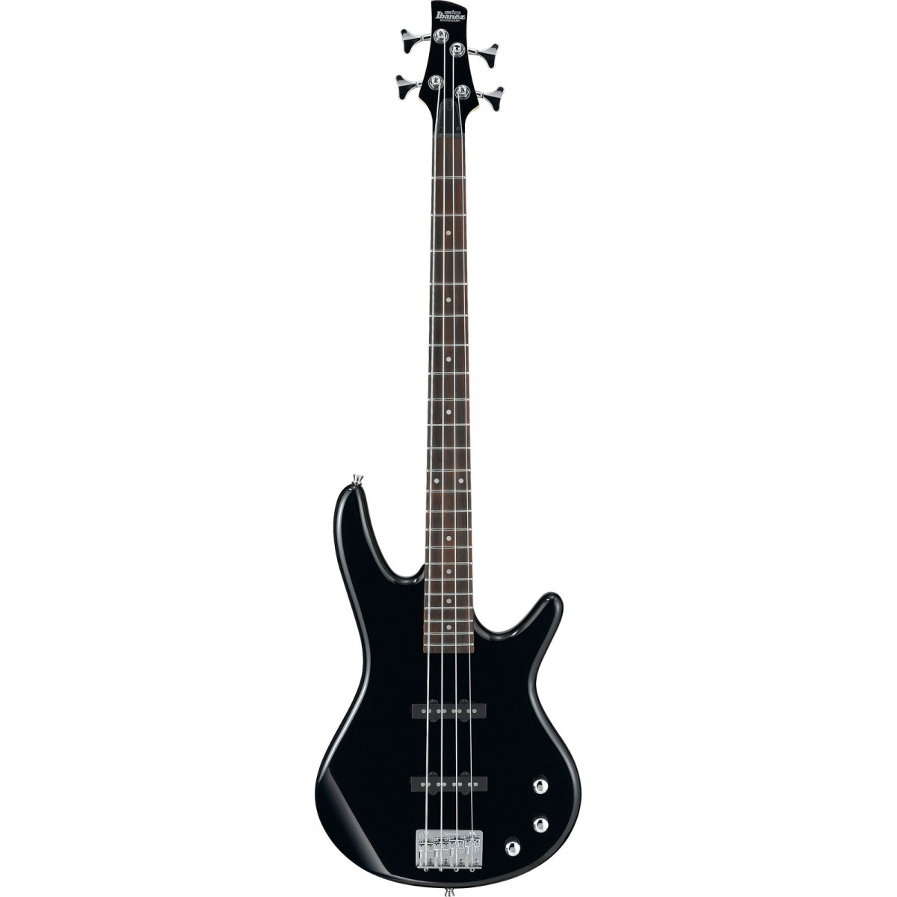
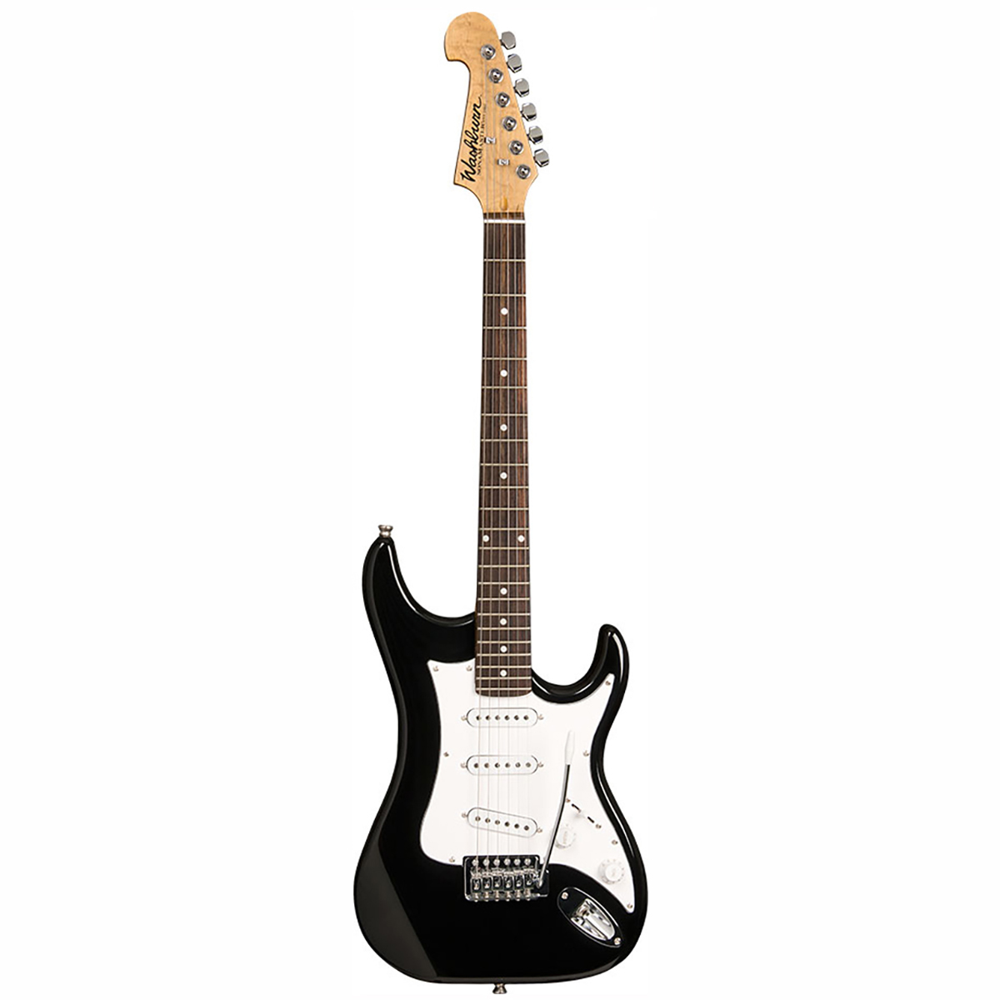
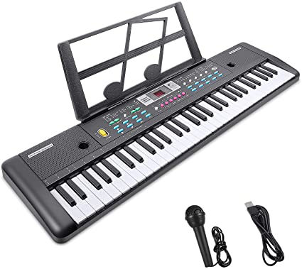
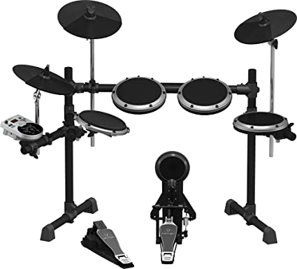

- INSTRUMENTOS ELECTRICOS -
Un instrumento eléctrico es uno en el cual el uso de aparatos eléctricos determina o afecta el sonido producido por un instrumento.
Es también considerado como un instrumento musical amplificado debido a la utilización de un amplificador electrónico del instrumento para proyectar el sonido pretendido como determinado por señales electrónicas del instrumento mecánico.
Esto no es lo mismo que un instrumento musical electrónico, lo cual usa una manera enteramente electrónica para crear y controlar el sonido.
INSTRUMENTOS EN VENTA:
BAJO ELECTRICO

El bajo eléctrico, llamado sencillamente bajo,1 es un instrumento musical melódico de la familia de los cordófonos, similar en apariencia y construcción a la guitarra eléctrica pero con un cuerpo de mayores dimensiones, un mástil de mayor longitud y escala y,
normalmente, cuatro cuerdas afinadas según la afinación estándar del contrabajo, su antecesor.
Marca YAMAHA
Tamaño 4-String
Color Negro
Dimensiones del artículo Largo x ancho x alto 121.5 x 45.5 x 9.5 centimeters
Tipo de material de la cuerda Acero
Número de cuerdas 4
PRECIO: $25,500.00
GUITARRA ELECTRICA

La guitarra eléctrica es un tipo de guitarra, que a diferencia de la guitarra española y la guitarra acústica, su caja no hace resonancia,
ya que esta es por inducción eléctrica a través de un Amplificador de guitarra o también a través de un Pedal de efectos.
Nombre de estilo: Acoustic Guitar
Marca Jasmine
Color Natural
Tipo de material superior Picea
Tipo de material del diasón Palisandro
Tipo de material de la cuerda Acero
Orientación de la mano Derecha
Número de cuerdas 6
PRECIO: $9,500.00
PIANO ELECTRICO

Un piano eléctrico es un instrumento musical eléctrico de teclado que produce sonido mecánicamente y lo convierte en una señal de audio electrónica mediante pastillas (pickups).
A diferencia del sintetizador, el piano eléctrico no es un instrumento electrónico, sino electromecánico.
Is Discontinued By Manufacturer : No
Dimensiones del producto : 128.42 x 29.21 x 8.71 cm; 6.99 kg
Producto en Amazon.com.mx desde : 9 enero 2019
Fabricante : Roland
ASIN : B07M9WFSTK
Número de modelo del producto : GO-88P
Clasificación en los más vendidos de Amazon: nº1,394 en Instrumentos Musicales (Ver el Top 100 en Instrumentos Musicales)
nº8 en Pianos Digitales
PRECIO: $10,500.00
BATERIA ELECTRICA

Se conoce como batería electrónica al instrumento de percusión en el que el sonido es emitido por un generador de ondas electrónicas o un sampler,
que produce ondas sonoras sintetizadas.
Is Discontinued By Manufacturer : No
Dimensiones del producto : 60.96 x 96.52 x 109.22 cm; 13.4 kg
Producto en Amazon.com.mx desde : 28 junio 2018
Fabricante : inMusic Brands Inc.
ASIN : B07BW1XJGP
Número de modelo del producto : Nitro Mesh Kit
Clasificación en los más vendidos de Amazon: nº67 en Instrumentos Musicales (Ver el Top 100 en Instrumentos Musicales)
nº1 en Tambores Electrónicos
PRECIO: $10,500.00